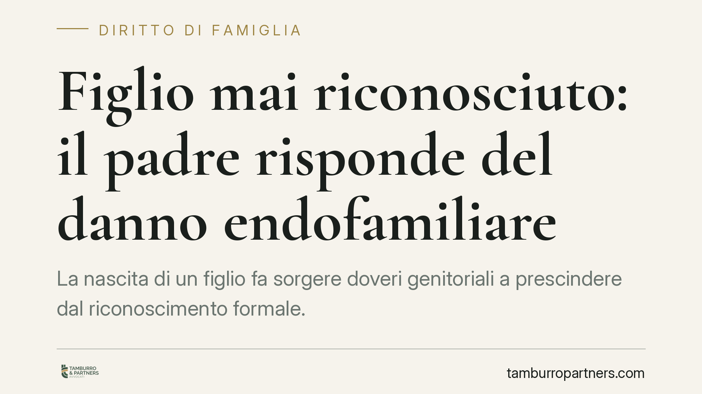

Figlio mai riconosciuto: il padre risponde del danno endofamiliare
La nascita di un figlio fa sorgere doveri genitoriali a prescindere dal riconoscimento formale. Secondo un consolidato orientamento della Cassazione, il genitore che si sottrae a quei doveri può essere condannato a risarcire il danno subìto dal figlio. Vediamo i presupposti, i limiti probatori e le mosse operative per chi si trova in questa situazione.

Il fatto e il principio
Un uomo nega la paternità, non riconosce il figlio e si disinteressa della sua crescita. Anni dopo arriva l'accertamento giudiziale della paternità. La domanda che resta aperta è: oltre al mantenimento, quel genitore deve anche risarcire il danno per la mancata presenza?
La Corte di Cassazione, in linea con un orientamento ormai consolidato in tema di danno endofamiliare, risponde di norma in senso affermativo. Il presupposto non è il riconoscimento, ma la procreazione: è il fatto biologico della nascita a far sorgere i doveri genitoriali.
Inquadramento normativo
Occorre distinguere due piani. La nascita genera *ex se* i doveri di mantenimento, istruzione, educazione e assistenza morale previsti dall'art. 147 cod. civ. e dall'art. 315-bis cod. civ.. Il riconoscimento, invece, ha natura dichiarativa: non crea il rapporto, ma accerta formalmente una paternità già esistente. In altri termini, i doveri del genitore decorrono dalla nascita, non dall'atto con cui egli si assume ufficialmente il ruolo.
Su questa base, la violazione degli obblighi genitoriali può integrare un illecito civile fonte di responsabilità. Il fondamento costituzionale si rinviene negli artt. 2 e 30 Cost., che tutelano i diritti inviolabili della persona anche nelle formazioni sociali e pongono a carico dei genitori il dovere di mantenere, istruire ed educare i figli.
Il cosiddetto inganno sulla contraccezione invocato da alcuni padri non esclude la responsabilità: la fonte del dovere è la procreazione in sé, non le circostanze del concepimento.
Il profilo probatorio: agevolazione, non inversione
Su questo punto serve precisione. Non vi è una vera e propria inversione legale dell'onere della prova. Il danno derivante dalla privazione del rapporto genitoriale può essere dimostrato anche per presunzioni semplici, ai sensi degli artt. 2727-2729 cod. civ.: il giudice può risalire al fatto ignoto (il pregiudizio) partendo da fatti noti gravi, precisi e concordanti.
Si tratta quindi di un'agevolazione probatoria a favore del figlio, non di un automatismo. Resta fermo l'onere del danneggiato di allegare e dedurre elementi concreti — la totale assenza del genitore, la durata, le conseguenze sulla crescita — su cui la presunzione possa fondarsi. Il nesso causale e l'entità del danno restano oggetto di accertamento in concreto.
La formula corretta, dunque, è questa: il danno può essere provato in via presuntiva, ma non si presume in modo pacifico e incondizionato.
Implicazioni pratiche
Per il figlio (o per il genitore che agisce nel suo interesse quando è minorenne), si aprono due domande distinte e cumulabili:
- la domanda di mantenimento, anche per il periodo pregresso, legata al dovere economico;
- la domanda risarcitoria, autonoma, relativa al danno non patrimoniale da privazione della figura genitoriale.
Sono azioni diverse, con presupposti e prove differenti: vanno impostate separatamente, pur potendo convivere nello stesso giudizio.
Attenzione alla prescrizione. L'azione risarcitoria da illecito è soggetta al termine quinquennale previsto dall'art. 2947 cod. civ., che decorre dal momento in cui il danneggiato ha avuto consapevolezza del danno e della sua riferibilità alla condotta del genitore. La valutazione del dies a quo è delicata e va ponderata caso per caso.
Per il padre destinatario di una simile domanda, la difesa non può limitarsi a contestare la paternità: occorre lavorare sul piano degli elementi presuntivi, del nesso causale e dell'effettivo pregiudizio dedotto.
Cosa fare in concreto
- Raccogliete la documentazione utile a provare l'assenza del genitore: comunicazioni, testimonianze, atti dello stato civile, eventuali rifiuti di contatto.
- Tenete distinte le due domande: quella di mantenimento (dovere economico) e quella risarcitoria (danno non patrimoniale). Hanno basi e prove diverse.
- Verificate i termini di prescrizione prima di agire: il quinquennio decorre dalla consapevolezza del danno, non automaticamente dalla nascita o dall'accertamento della paternità.
- Allegate fatti concreti, non formule: la presunzione opera solo se ancorata a circostanze specifiche e documentate.
- Richiedete una valutazione preliminare della posizione prima di avviare il giudizio, per calibrare domande e strategia probatoria.
Contributo informativo a cura di Tamburro & Partners Avvocati. Non costituisce parere legale.
Ogni famiglia ha il suo equilibrio.
Separazione, divorzio, affidamento, assegno: se vuoi un confronto riservato su una specifica situazione, scrivi allo studio. Ti rispondiamo entro un giorno lavorativo.